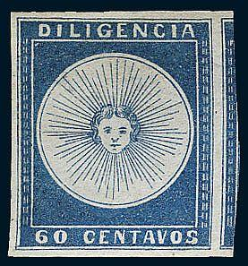
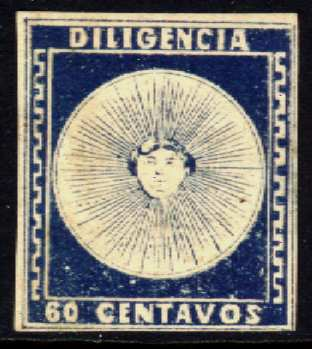
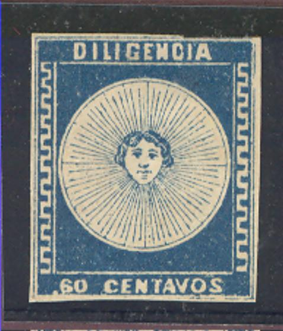
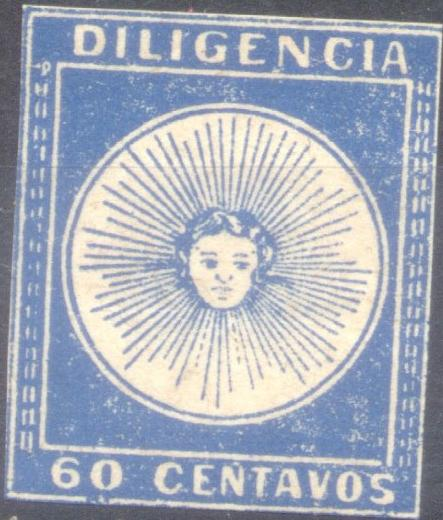
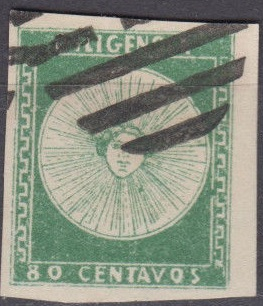
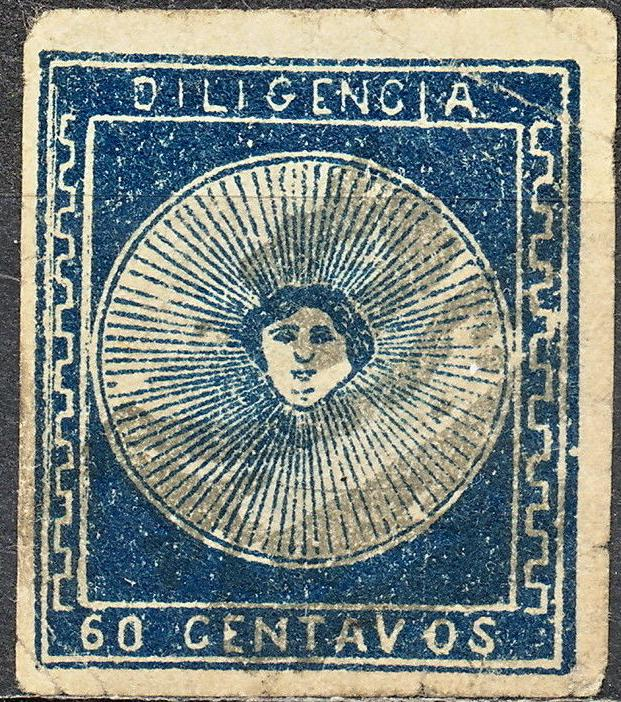

Return To Catalogue - 1856 issue
Note: on my website many of the
pictures can not be seen! They are of course present in the
catalogue;
contact me if you want to purchase it.
All these stamps are quite rare and forgeries exist, examples:


The "60" is placed too far to the left in this forgery.
It is presumably Forgery 'B' of Hoffmann's book.


Forgery with the '60' too far to the left and the 'S' of
'CENTAVOS' too far to the right. Also, this letter is slanting
forwards. The pattern at the left hand side starts wrongly at the
bottom. This could be forgery 'C' of the 60 c value according to
Hoffmann's book.

Forgery 'D' of the 60 c value according to Hoffmann's book, the
'S' of 'CENTAVOS' is slanting and the 'E' of 'DILIGENCIA' is too
thick in the center.


Two forgeries apparently made by the same forger.The side
patterns are too thick and the face has the same expression in
both forgeries. The "C" of "DILIGENCIA" is
too narrow, the 60 c has a dot in front of the "60".
Note that they all have openings between the vertical and
horizontal lines of the central rectangle. The 1 R has a dot in
front and a dot behind the "1". The 60 c is listed as
forgery 'E' in Hoffmann's book. The 80 c and 1 R are listed as
forgery 'A' in Hoffmann.


"S" of "CENTAVOS" very strange. Probably
forgery type F of the 60 c value from the Hoffmann book.
Apparently printed in sheetlets with 2 colums of 8 stamps.

Another primitive forgery.
Some very crudely printed forgeries
 
Two forgeries of the second type of the 60 c value. The two
forgeries differ from each other.
 

These forgeries have a typical bars with "G" cancel
which was often used by the forger Oneglia.
Senf forgery of the 60 c value, with 'Facsimile.' incorporated in the design:


Left with 'Facsimile' inscription. On the right this inscription
has been erased, making it a much more dangerous forgery!.
Some forgeries with the side ornaments too coarse:


Forgeries printed in the wrong colours, 60 c red and 1 R green:


Forgery of the (non-existing) second type 1 Real value.

Three forgeries (one of each value), made by the same forger.

Forgery of the 60 c with a wavy pattern at the sides.

Forgery with very wide white outer frameline and 'normal' cancel.

(Rather primitive forgery)

Forgery with 'normal' cancel and bad lettering. All the rays of
the sun have equal length.

Another forgery of the 80 c value.

80 c Fournier forgeries. The color is too yellowish. This is most
likely forgery B of the 80 c value in Hoffmann's book.

1 Real Fournier forgeries, the inscription reads 'RFAL' There is
a break in the inner circle at the left hand side. The ornaments
at the left hand side go too far down. It is most likely forgery
type C of Hoffmann's book. It is said there that it exists with
forged cancel Mensagerias Mercedes (is this one of the cancels
shown below?).


Most likely Fournier forgeries as well.

Next and this issue printed on one sheet.
Sperati made several forgeries of these stamps, three of the 60 c, two of the 80 c and three of the 1 r values. They are quite valuable and exist in different color shades. Sperati liked the stamps of Uruguay so much, he even made applied the sun-symbol at the back of many of his 'Reproductions'. Sperati used manuscript cancels on his forgeries of this set.

Reproduction 'A'; there is a white line joining the 'D' of
'DILIGENCIA' to the white frameline above it. Image obtained from
Richard Frajola's website:
http://www.seymourfamily.com/rfrajola/Sperati/speratiindex.htm.
I've seen it with manuscript cancels 'No 6' and others:
Reproduction 'A' with cancels and color shades.

Sperati's Reproduction 'B' of the 60 c value; there is a blue dot
in the white line above the 'V' of 'CENTAVOS'.

Sperati's Reproduction 'C' of the 60 c value. This is very
similar to Reproduction 'B' except that the left frameline has
been redrawn.

Sperati forgery (blackprint and normal stamp) of the type II of
the 60 c value. The genuine stamps are so rare that even the BPA
is not certain how these forgeries differ from the genuine
stamps, but based on the above two stamps, it is highly likely
that the same dots and spots can be found in all Sperati's
forgeries.

(Image obtained from Richard Frajola's website:
http://www.seymourfamily.com/rfrajola/Sperati/speratiindex.htm);
presumably 'Reproduction A'. The left outer frameline is missing.
There is a break in the lower left hand side of the central
circle above the '80'. I've seen this forgery with a manuscript
cancel.

(Sperati's type B forgery, there is a blotch of ink below the '0'
of '80' and a spot in the frame above the 'N' of 'DILIGENCIA',
probably corresponding to one of the types he copied)


Sperati's reproduction 'B' (white spots in front of the 'D' of
'DILIGENCIA') and reproduction 'C' of the 1 r value
I presume this is 'Reproduction A'
Sperati also made a 'Reproduction D' of the 1 r value (very similar to 'Reproduction C', but with a dot in the left part of the 'D' of 'DILIGENCIA').
More pictures of Sperati's forgeries can be found at the above mentioned website. Sperati only used manuscript cancels (if any) on the forgeries of this issue.
'
Literature:
'Estudio de las Falsificaciones de los Sellos Postales del
Uruguay' Robert Hoffmann 1948, 115 pages. Can be downloaded from
http://www.clubfilatelicodeluruguay.com/FalsosUy.html.

{kind=link}
{kind=link}
{kind=link}
{kind=link}
{kind=link}
{kind=link}
{kind=link}